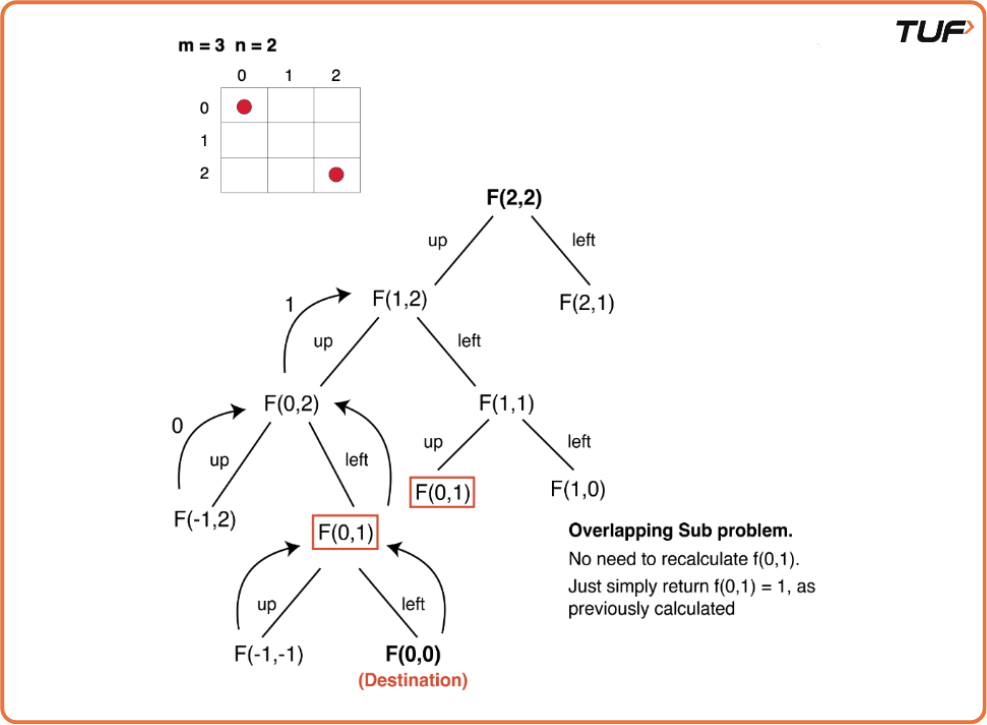
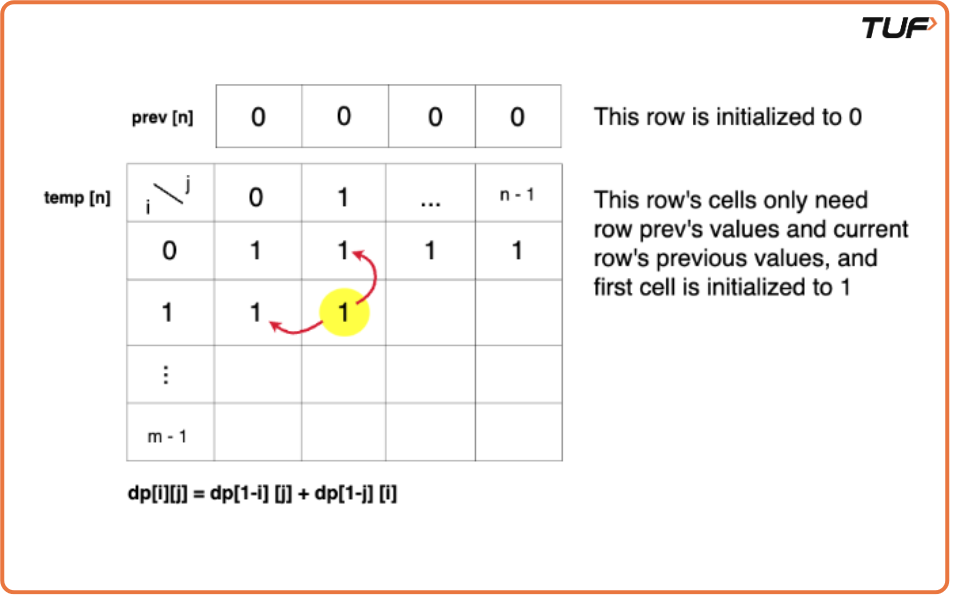
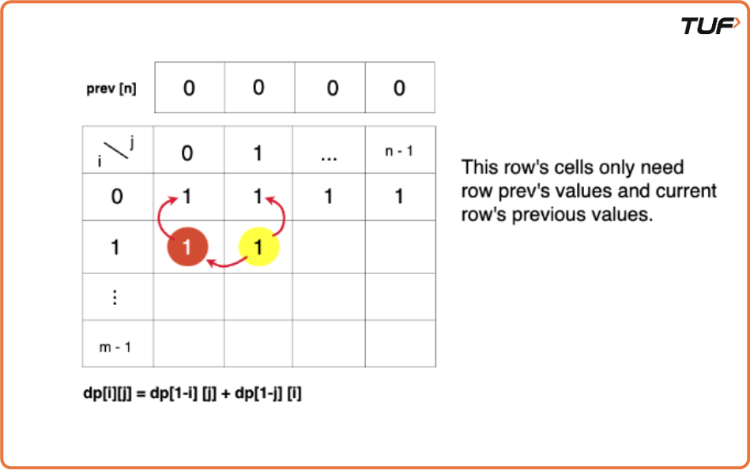

Grid Unique Paths : DP on Grids (DP8)
Problem Statement:
Given two integers m and n, representing the number of rows and columns of a 2d array named matrix. Return the number of unique ways to go from the top-left cell (matrix[0][0]) to the bottom-right cell (matrix[m-1][n-1]).
Movement is allowed only in two directions from a cell: right and bottom.
Examples
Example 1: Input: m = 3, n = 2 Output: 3 Explanation: There are 3 unique ways to go from the top-left to the bottom-right cell: 1) right → down → down 2) down → right → down 3) down → down → right Example 2: Input: m = 2, n = 4 Output: 4 Explanation: There are 4 unique ways to go from the top-left to the bottom-right cell: 1) down → right → right → right 2) right → down → right → right 3) right → right → down → right 4) right → right → right → down
Disclaimer: Here is the practice link to help you assess your knowledge better. It's highly recommend trying to solve it before looking at the solution.
Memoization Approach
Algorithm
- Declare a
dp[]array of size[m][n], wheremandnare the dimensions of the grid. This array stores the results of subproblems, wheredp[i][j]represents the total number of ways to reach from(0,0)to(i,j). - Initially, fill the
dparray with-1to indicate that no subproblem has been solved yet. - While encountering an overlapping subproblem, check if the value in
dp[i][j]is not-1. If the value is not-1, it means this subproblem has already been solved, and you can directly return the stored value from thedparray instead of recalculating it. - Whenever a subproblem is encountered and it is not solved yet (i.e., the value at
dp[i][j]is-1), calculate the value of the subproblem and store it in thedparray for future reference. This ensures that future overlapping subproblems can be solved in constant time by retrieving the value from the array.

Code
#include <bits/stdc++.h>
using namespace std;
class Solution {
private:
//Function to solve the problem using recursion
int func(int i, int j, vector<vector<int>>& dp){
// Base case
if (i == 0 && j == 0) return 1;
/* If we go out of bounds or reach
a blocked cell, there are no ways.*/
if (i < 0 || j < 0) return 0;
/* If we have already computed the number
of ways for this cell, return it.*/
if (dp[i][j] != -1) return dp[i][j];
/* Calculate the number of ways by
moving up and left recursively.*/
int up = func(i - 1, j, dp);
int left = func(i, j - 1, dp);
// Store the result in dp table and return it.
return dp[i][j] = up + left;
}
public:
/*Function to count the total ways
to reach (0,0) from (m-1,n-1)*/
int uniquePaths(int m, int n) {
/* Initialize a memoization table (dp) to
store the results of subproblems.*/
vector<vector<int>> dp(m, vector<int>(n, -1));
//Return the total count(0 based indexing)
return func(m-1,n-1, dp);
}
};
int main() {
int m = 3;
int n = 2;
//Create an instance of Solution class
Solution sol;
// Call the countWays function and print the result.
cout << "Number of ways: " << sol.uniquePaths(m, n) << endl;
return 0;
}Complexity Analysis
Time Complexity: O(m * n), where m is the number of rows and n is the number of columns in the grid. This is because we are filling up a 2D DP array of size m x n, and each cell takes constant time to compute.
Space Complexity: O(m * n), due to the storage of the DP array which keeps track of the number of unique paths to each cell in the grid.
Tabulation Approach
Algorithm
- Declare a
dp[]array of size[m][n], wheremandnrepresent the number of rows and columns of the grid, respectively. Thedp[i][j]stores the total number of ways to reach from the start(0,0)to the cell(i,j). - Set the base case: As per the recursive approach,
dp[0][0]is 1, indicating there is only one way to reach the starting position. So, initializedp[0][0] = 1. - Use two nested loops to fill the
dparray iteratively. The outer loop iterates through rows (i from 0 to m-1), and the inner loop iterates through columns (j from 0 to n-1). - For each cell
dp[i][j], calculate the number of ways to reach it from the top (dp[i-1][j]) and from the left (dp[i][j-1]). Add the values ofdp[i-1][j]anddp[i][j-1]to get the total number of ways to reachdp[i][j]. - As the question asks for the total number of ways, update
dp[i][j]as the sum ofdp[i-1][j](ways from above) anddp[i][j-1](ways from left). - Once all cells are processed, the last element
dp[m-1][n-1]will contain the total number of ways to reach the destination (bottom-right corner) of the grid. Return this value as the result after the bottom-up computation.
Code
#include <bits/stdc++.h>
using namespace std;
class Solution {
private:
//Function to solve the problem using tabulation
int func(int m, int n, vector<vector<int>>& dp){
// Loop through the grid using two nested loops
for (int i = 0; i < m; i++) {
for (int j = 0; j < n; j++) {
// Base condition
if (i == 0 && j == 0) {
dp[i][j] = 1;
/* Skip the rest of the loop and
continue with the next iteration.*/
continue;
}
/* Initialize variables to store the number
of ways from cell above (up) and left (left)*/
int up = 0;
int left = 0;
/* If we are not at first row (i > 0), update
'up' with the value from the cell above.*/
if (i > 0)
up = dp[i - 1][j];
/* If we are not at the first column (j > 0),
update 'left' with value from the cell to left.*/
if (j > 0)
left = dp[i][j - 1];
/* Calculate the number of ways to reach the
current cell by adding 'up' and 'left'.*/
dp[i][j] = up + left;
}
}
// The result is stored in bottom-right cell (m-1, n-1).
return dp[m - 1][n - 1];
}
public:
/*Function to count the total ways
to reach (0,0) from (m-1,n-1)*/
int uniquePaths(int m, int n) {
/* Initialize a memoization table (dp) to
store the results of subproblems.*/
vector<vector<int>> dp(m, vector<int>(n, -1));
//Return the total count(0 based indexing)
return func(m, n, dp);
}
};
int main() {
int m = 3;
int n = 2;
//Create an instance of Solution class
Solution sol;
// Call the countWays function and print the result.
cout << "Number of ways: " << sol.uniquePaths(m, n) << endl;
return 0;
}Complexity Analysis
Time Complexity: O(m * n), where m is the number of rows and n is the number of columns in the grid. This is because we are filling up a 2D DP array of size m x n, and each cell takes constant time to compute.
Space Complexity: O(m * n), as we are using a 2D array to store the results of subproblems. However, we can optimize this to O(n) by using a 1D array and updating it in place.
Space Optimized Approach
Algorithm
- Observe the relationship obtained in the tabulation approach:
dp[i][j] = dp[i-1][j] + dp[i][j-1]. We notice that to calculatedp[i][j], we only need the values from the previous row and the current row. This allows us to optimize the space usage. - Instead of maintaining the entire 2D
dparray, we can use two arrays, one for the current row (let's call ittemp) and one for the previous row (let's call itprev). - Initially, initialize the
prevarray to all zeros to represent the starting point. Thetemparray will hold the current row's values during the iteration. - For each row, use the
prevarray (representing the previous row) and thetemparray (representing the current row) to compute the values ofdp[i][j]. - After processing the current row, set
prevto be equal totemp, so that in the next iteration,prevwill represent the previous row, andtempwill be ready to hold the new row's values. - At the end of the process,
prev[n-1]will store the final result, which contains the total number of ways to reach the destination in the grid. This provides the answer in a space-efficient manner using only two rows.


Code
#include <bits/stdc++.h>
using namespace std;
class Solution {
private:
//Function to solve the problem using space optimization.
int func(int m, int n){
/* Initialize a vector to represent
the previous row of the grid.*/
vector<int> prev(n, 0);
// Iterate through the rows of the grid.
for (int i = 0; i < m; i++) {
/* Create a temporary vector to
represent the current row.*/
vector<int> temp(n, 0);
for (int j = 0; j < n; j++) {
// Base case
if (i == 0 && j == 0) {
temp[j] = 1;
continue;
}
/* Initialize variables to store the number
of ways from the cell above (up) and left (left).*/
int up = 0;
int left = 0;
/* If we are not at the first row (i > 0), update
'up' with the value from the previous row.*/
if (i > 0)
up = prev[j];
/* If we are not at the first column (j > 0),
update 'left' with the value from current row.*/
if (j > 0)
left = temp[j - 1];
/* Calculate the number of ways to reach the
current cell by adding 'up' and 'left'.*/
temp[j] = up + left;
}
/* Update the previous row with values
calculated for the current row.*/
prev = temp;
}
/* The result is stored in the last
cell of the previous row (n-1).*/
return prev[n - 1];
}
public:
/*Function to count the total ways
to reach (0,0) from (m-1,n-1)*/
int uniquePaths(int m, int n) {
//Return the total count(0 based indexing)
return func(m, n);
}
};
int main() {
int m = 3;
int n = 2;
//Create an instance of Solution class
Solution sol;
// Call the countWays function and print the result.
cout << "Number of ways: " << sol.uniquePaths(m, n) << endl;
return 0;
}Complexity Analysis
Time Complexity: O(m * n), where m is the number of rows and n is the number of columns in the grid. This is because we are iterating through each cell in the grid once.
Space Complexity: O(n), as we are using two arrays of size n to store the current and previous rows. This is an optimization from the previous approaches that used a 2D array.